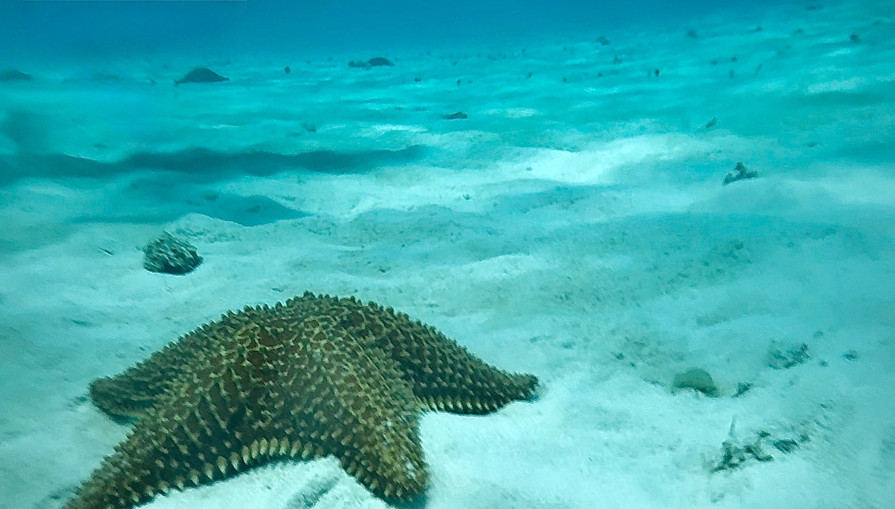
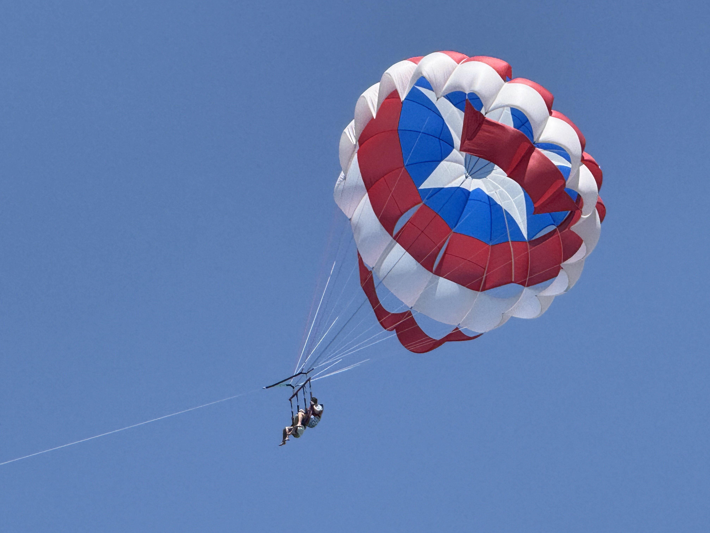
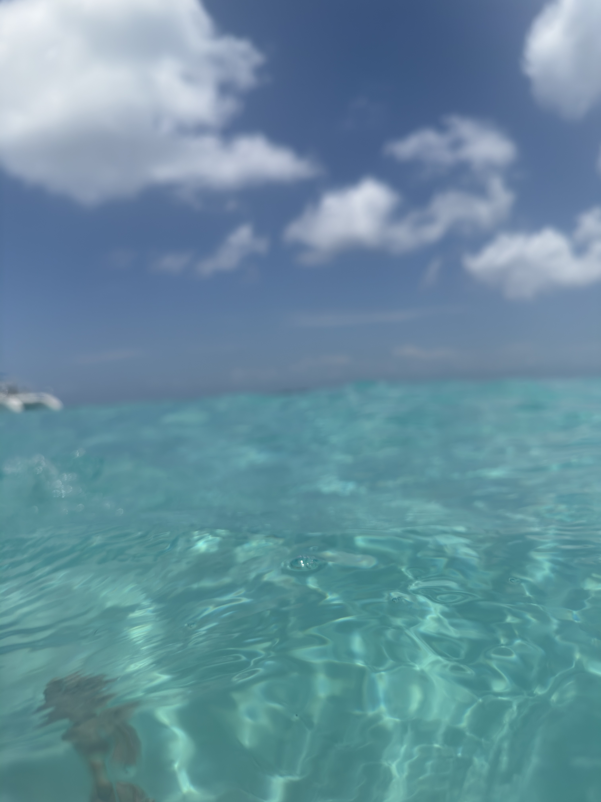

Encontré esta estrella de mar mientras hacía snorkel en Cozumel.

Vimos parasailing en Isla Mujeres y la vista fue espectacular.
Nadar cerca de un tiburón ballena fue una experiencia inolvidable.

El agua de Cozumel tenía un color increíble.